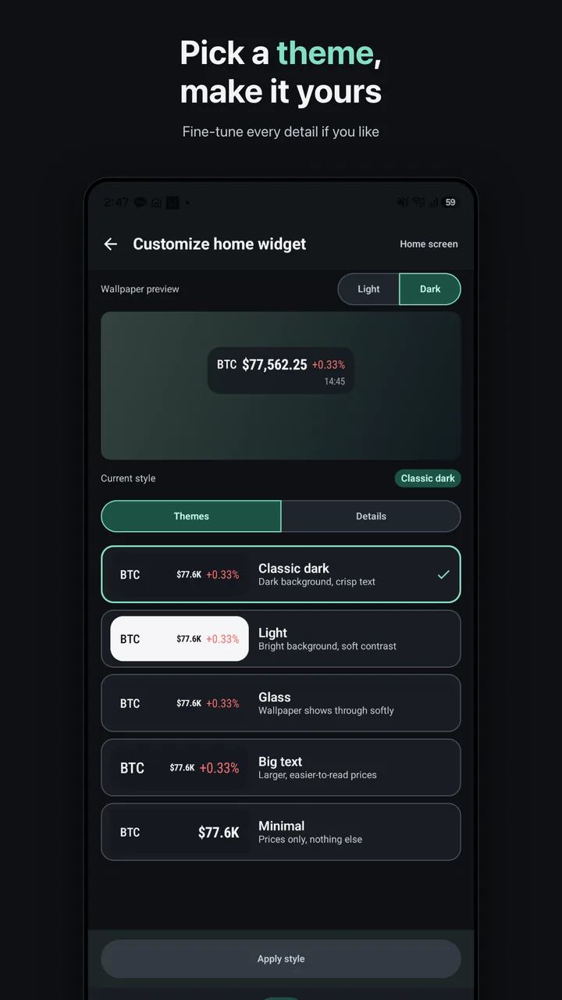

How to Show Crypto Prices on Your Samsung Lock Screen and Always On Display
If you check a coin price a dozen times a day, unlocking the phone and opening an app each time gets old fast. On a Samsung Galaxy running One UI 7 or later there is a cleaner way: put the price in a lock screen widget, and it also shows up on the Always On Display while the screen is off.
This guide covers what you need, the Samsung steps (from Samsung's own support pages), the ways you can get a price into that slot, and the limits worth knowing before you set it up. I'm the developer of Crypto AOD, one of the apps that does this, so I'll say clearly where the app comes in and where it doesn't.
What you need
- A Galaxy phone on One UI 7 or later. Samsung's current lock screen and AOD widgets need One UI 7.0 or later. You can check your version under Settings > About phone > Software information (menu names may vary by device).
- Always On Display turned on, if you want the price visible with the screen off. Samsung says that when AOD is enabled, the widgets you added to the lock screen also appear on the AOD (Samsung US: widgets on Galaxy phones).
- An app that offers a lock screen widget for crypto prices. Not every widget can go on the lock screen. Apps have to offer a lock screen version, and Samsung's slots only come in small sizes.
On other Android phones, the Samsung lock screen slots don't exist, so this guide won't apply. A home screen widget is the usual fallback there.
Your options at a glance
There are a few common ways people get a price in front of them without opening an app. They work differently, so it helps to know which one you're actually setting up.
| Method | Where it shows | Extra apps needed | Good to know |
|---|---|---|---|
| Lock screen widget (Samsung slot) | Lock screen and AOD | No, just an app that offers a lock screen widget | Small 1×1 or 2×1 slots; the system draws the background |
| Good Lock with the LockStar module | Lock screen | Good Lock and LockStar from Samsung | Often recommended for placing widgets on the lock screen; it's a separate customization tool not covered here |
| Price alerts from an exchange app | Notification on the lock screen | The exchange's app, if it offers alerts | Tells you when something happens, rather than showing a price all the time |
| Home screen widget | Home screen only | An app with a widget | Larger, can list several coins, but you have to unlock first |
If what you want is "glance at the phone on the desk and see the price," the Samsung lock screen slot is the one to set up, because it's the method that carries over to AOD.
Step 1: Add a widget to the lock screen
Samsung's steps for One UI 7 and later are short (Samsung UAE support: add widgets on the lock screen and AOD):
- Wake the phone, then touch and hold an empty area of the lock screen.
- Tap Widgets (on some devices the area reads Add widgets).
- Pick the widget you want and add it. Repeat for more.
- Tap Done to save.
You can also get to the same editor from Settings > Lock screen and AOD > Edit lock screen > Widgets (menu names may vary by device). To move a widget, touch and hold it and drag it next to the others. To remove one, tap the red minus icon on it.
Step 2: Choose how Always On Display behaves
Open Settings > Lock screen and AOD > Always On Display and turn on the switch at the top. On older One UI versions the menu is just called Lock screen. Samsung lists three modes (Samsung UK: Always On Display):
- Tap to show: the default. AOD appears for a short time after you tap the screen.
- Show always: AOD stays on whenever the screen is off. Samsung notes this uses more battery.
- Show as scheduled: AOD is on only during the hours you set.
For a price you want to see at a glance, Show always is the one that matches. If you only check now and then, Tap to show costs less battery. Also note that AOD can be greyed out while Power saving mode is on.
Step 3: Put a coin price in the widget
This part depends on the app. Here's how it works with Crypto AOD, which I built for this exact slot.

- Install Crypto AOD from Google Play and open it.
- Add a coin: pick an exchange (Binance, Coinbase, Kraken, OKX, Bybit, Upbit or Bithumb) and search by name, symbol or pair. You can filter by quote currency such as USD, USDT, EUR or BTC.
- In the lock screen editor from Step 1, choose Crypto AOD and pick a size: 1×1 or 2×1. Those are the only two sizes Samsung's lock screen slots support.
- Pick the coin for that widget. Each lock screen widget shows one coin.
- Back in the app, decide what each widget shows. Ticker, price and percentage change each get their own text size, and any of them can be hidden. Up and down moves are marked with ▲ and ▼.

The app can't open Samsung's lock screen editor for you. Its button takes you as far as the Settings screen, and you finish the last taps there.
How fresh is the price?
Be clear on this before you rely on it. Lock screen widgets don't stream prices. They refresh on a timer.
- In Crypto AOD you choose every 1, 5 or 15 minutes. The 1 and 5 minute options need you to allow a battery optimization exemption and exact alarms. 15 minutes needs no extra permissions.
- Tap the widget to refresh it right away. It shows "Refreshing…" while it fetches.
- If a refresh fails or you're offline, the widget keeps the last price and the time it was fetched, so you can tell how old it is.
- Prices come from each exchange's public API and are for reference only. Different exchanges can show slightly different prices for the same coin.
Limits worth knowing
- The background pill can't be turned off. The translucent rounded shape behind a lock screen widget is drawn by the system, not the app. Its color follows your lock screen theme. No app setting removes it.
- Small slots, one coin each. At 1×1 there's room for a short price. 2×1 gives longer prices more space.
- Sleeping apps can pause updates. If you don't open the app for about three days, Samsung's app sleeping feature may stop it from refreshing. Crypto AOD's Settings tab walks you through adding an exception.
- Galaxy only for the lock screen. On non-Samsung phones you get the home screen widget, which lists your coins (up to 5 with Premium) with the last-updated time.

Free and Premium
The free version tracks 1 coin across all widgets. Premium raises that to 5 coins and is a one-time purchase, not a subscription, with a 7-day free trial after install. There's no account, no login, no ads and no analytics. Your watchlist and widget settings stay on the phone. When it refreshes, your IP address is sent to the exchange APIs and the coin logo service (CoinCap).
Crypto AOD is an independent app. It isn't affiliated with or endorsed by Samsung or any of the exchanges.
Quick recap
- Make sure you're on One UI 7 or later.
- Touch and hold the lock screen, tap Widgets, add a crypto widget, tap Done.
- Turn on Always On Display and pick Show always if you want the price visible all the time.
- Pick a refresh interval you're comfortable with on battery, and tap the widget when you want a fresh number.
Questions, or something that doesn't work on your Galaxy model? Write to support@lalatap.kr. You can also see the app overview.